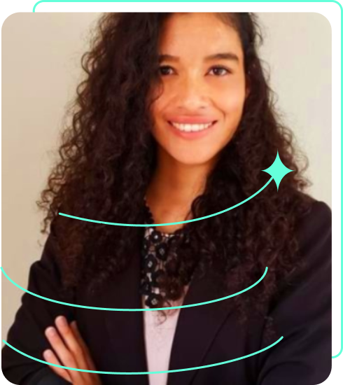

Sobre Mim
Desenvolvedora Full-Stack & Entusiasta de Tecnologia

🎯
Missão
Desenvolver soluções inovadoras que agreguem valor e impactem positivamente a vida das pessoas através da tecnologia.
💡
Experiência
Especialista em Análise de Dados e Design Web UI/UX, com conhecimento em JavaScript, HTML e CSS, focada em criar interfaces web interativas e funcionais.
🚀
Objetivos
Aprimorar constantemente minhas habilidades e adquirir experiência prática para contribuir com projetos inovadores no desenvolvimento web.
Minha Jornada
2025
Especialização em Back-End + IA - Java Spring e Google Data Analytics
2024
Especialização em Design Web UI/UX
2023
Especialização em JavaScript e Frameworks modernos
2022
Início em Análise e Desenvolvimento de Sistemas
2021
Início da jornada em desenvolvimento web